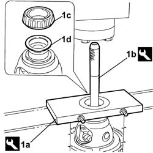
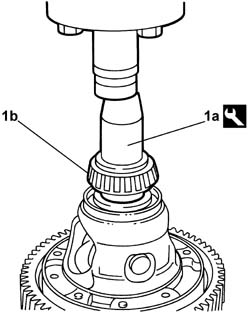

2110D26 DIFFERENTIAL INTERNAL CASING BEARINGS - REPLACE WITH DIFFERENTIAL INTERNAL CASING REMOVED
- Path
- Procedures > 21 GEARBOX UNIT > 2110 MANUAL GEARBOX WITH DIFFERENTIAL > 2110D MANUAL GEARBOX DIFFERENTIAL > 2110D26 DIFFERENTIAL INTERNAL CASING BEARINGS - REPLACE WITH DIFFERENTIAL INTERNAL CASING REMOVED
- Kind
- repair procedure (removal / refitting; the operation number is the code)
- Applies to
- engines: 2.2; all production periods
- Interactive page
- https://sloeber94.github.io/elrnDB-fCrm/en/#/194000452
Applies to: engines: 2.2; all production periods
 Removing
Removing
 Refitting
Refitting- Place the differential assembly in the press.
1. Place the tool (1a) on the differential casing bearing and, using the tool (1b), remove the bearing (1c) and the washer (1d) from the housing on the differential casing.
Tool | Description | Function | Validity |
|---|---|---|---|
1870845000 | Extractor | Extracting bearing from differential | 2.2 |
Tool | Description | Function | Validity |
|---|---|---|---|
1870007000 | Grip | Grip for tool for extracting bearing/fitting main shaft oil seal/fitting differential bearing race |
- Proceed with the removal of the crown wheel side differential conical bearing, using the same procedure and equipment as described above.

Applies to: engines: 2.2; all production periods
Refitting
Removing1. Place the differential casing in the press and, using the drift (1a), fit the conical bearing (1b) in the differential casing complete with old washer.
Tool | Description | Function | Validity |
|---|---|---|---|
1860770000 | Fitting tool | Fitting differential conical bearings | 2.2 |
- Proceed with the refitting of the crown wheel side differential conical bearing, using the same procedure and equipment as described above.

Topics that link to this page (3)
- S024 GEARBOX NOISE - WHEN CORNERING
- 2110B20 MANUAL GEARBOX (5-6SPEED) WITH DIFFERENTIAL - DISMANTLING AND REASSEMBLY - WASH AND CHECK PARTS - REPLACE SYNCHRONISERS AND INTERNAL CONTROLS IF NECESSARY
- 2110D20 DIFFERENTIAL INTERNAL CASING, REMOVED - DISMANTLING AND REASSEMBLY, CHECK PLANET AND SATELLITE GEARS